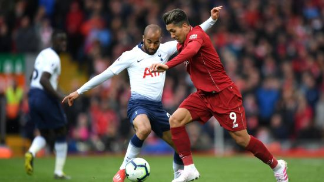

ПРИВЕТ УЧАСТНИКАМ СОРЕВНОВАНИЙ! |
|
Виды спорта: |
ФутболФутбол — командный вид спорта, в котором целью является забить мяч в ворота соперника ногами или другими частями тела (кроме рук) большее количество раз, чем команда соперника. Есть 17 официальных правил игры, каждое из которых содержит список оговорок, и руководящих принципов. Эти правила предназначены для применения на всех уровнях футбола, хотя есть некоторые изменения для таких групп, как юниоры, взрослые, женщины и люди с ограниченными физическими возможностями. Законы очень часто формулировались в общих чертах, которые позволяют упростить их применения в зависимости от характера игры. |
ГЛАВНОЕ НЕ ПОБЕДА, А УЧАСТИЕ! |
|